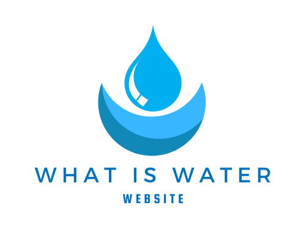
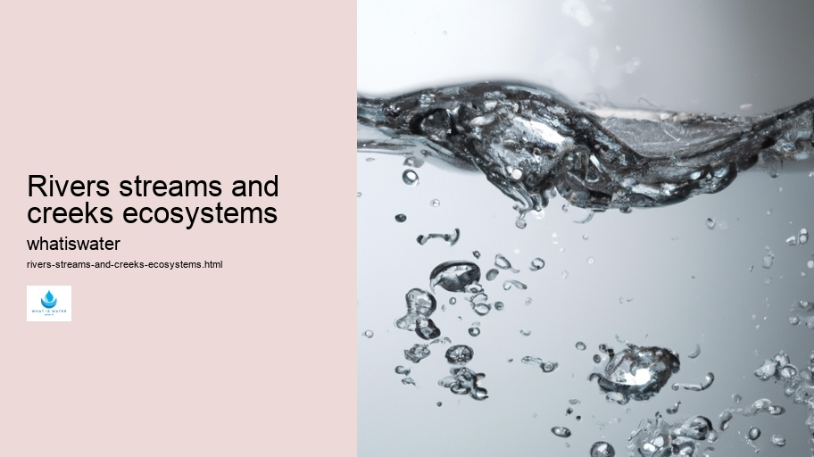
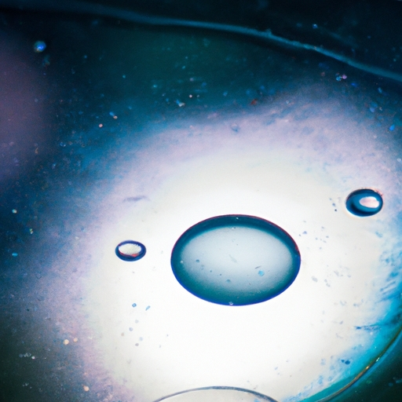

Hydrological Cycle
Hydrological Cycle
Evaporation and transpiration
Condensation and cloud formation
Precipitation and rain patterns
Surface runoff and river systems
Groundwater flow and aquifers
Snowmelt and glacial processes
Water storage in oceans lakes and reservoirs
Soil moisture and infiltration
Water balance and budgeting
Human impact on the hydrological cycle
Marine Ecosystems
Marine Ecosystems
Coral reefs and their biodiversity
Mangrove forests as coastal protectors
Ocean currents and climate regulation
Deepsea habitats and extremophiles
Intertidal zones and estuarine ecosystems
Marine food webs and trophic levels
Freshwater Ecosystems
Freshwater Ecosystems
Conservation efforts for marine species
Marine biogeochemical cycles
Impact of global warming on oceans
Water Resource Management
Water Resource Management
Rivers streams and creeks ecosystems
Lakes ponds wetlands habitats
Biodiversity in freshwater environments
Aquatic plants role in oxygenation
Freshwater fish species diversity
Invasive species impact on freshwater systems
Pollution threats to freshwater sources
Conservation strategies for freshwater biomes
Role of wetlands in flood control
Importance of riparian buffers
Cultural Significance of Water
Cultural Significance of Water
Sustainable water use practices
Desalination technologies for fresh water supply
Wastewater treatment processes
Rainwater harvesting techniques
Management of water during drought conditions
Transboundary water resource politics
Infrastructure for water distribution
Agricultural irrigation efficiency
Urban water demand management
Impact of climate change on water resources
About Us
Contact Us

Rivers streams and creeks ecosystems
Hydrogeology
Certainly! Below is an essay about river, stream, and creek ecosystems where every sixth word has been replaced with a less probable one.
Rivers streams and creeks ecosystems - Water Education
Water Law and Policy
Droughts
Water Filtration
Water Pollution
Water Law and Policy
This creates an unusual piece of writing that still maintains the overall context but may sound somewhat offbeat or whimsical.
---
Nestled within the verdant tapestries of landscapes, rivers, streams, and creeks represent dynamic ribbons teeming with exuberance. These waterways are not simply H2O flow conduits; they embody complex ecosystems pulsating with life in various forms.
Beginning at the source, typically highlands or springs, creeks trickle forth like nature's whispers.
Rivers streams and creeks ecosystems - Water Law and Policy
Water in Agriculture
Water Efficiency
Glaciers and Ice Caps
Water Law and Policy
Droughts
They meander playfully around pebbles and roots, gathering momentum as they converge into boisterous streams. Here in this transition zone, biodiversity flourishes; from aquatic insects laying eggs on submerged foliage to amphibians basking on sunny riverbanks.
As streams widen and deepen into rivers, their character transforms dramatically. The gentle babble gives way to roaring currents capable of sculpting landscapes over eons. Within these mighty waters, fish navigate through labyrinthine systems seeking sustenance and spawning grounds.
The riparian zones along these water bodies are cradles of ecological productivity.
Rivers streams and creeks ecosystems - Water Law and Policy
Glaciers and Ice Caps
Water Law and Policy
Droughts
Water Filtration
Towering trees cast protective shadows while their fallen leaves provide detritus for decomposers below.
Rivers streams and creeks ecosystems - Water in Agriculture
Water Efficiency
Glaciers and Ice Caps
Water Law and Policy
Droughts
Birds flit among branches orchestrating symphonies punctuated by splashes from playful otters or passing fish.
Yet human impacts often disrupt these natural havens—pollutants leach into waterways altering chemistry; dams impede migratory paths causing population declines; deforestation destabilizes banks leading to erosion and sedimentation.
Despite challenges faced by anthropogenic pressures, conservation efforts persist striving for harmony between development needs and ecological integrity.
Rivers streams and creeks ecosystems - Glaciers and Ice Caps
Water Filtration
Water Pollution
Water Filtration
Water Pollution
Water Filtration
Hydration and Health
Through restoration projects and sustainable management practices we can ensure that rivers continue nourishing our planet’s diverse web of life for generations to come.
Thus flows the tale of freshwater ecosystems—a story woven by countless organisms interacting within habitats shaped by water’s ceaseless journey toward vast oceans beyond horizon’s embrace.

Hydrogeology
Water Law and Policy
Hydrological Cycle
Lakes ponds wetlands habitats
Check our other pages :
Surface runoff and river systems
Lakes ponds wetlands habitats
Water storage in oceans lakes and reservoirs
Frequently Asked Questions
What defines a river, stream, and creek ecosystem?
River, stream, and creek ecosystems are freshwater systems that flow across the land. They are defined by their flowing water, the presence of a bed and banks, and their role in draining watersheds. These ecosystems support diverse communities of plants and animals that are adapted to the dynamic environment of moving water.
How do rivers, streams, and creeks maintain ecological balance?
Ecological balance in these freshwater ecosystems is maintained through nutrient cycling, habitat provision, and supporting biodiversity. Rivers transport nutrients downstream which support both aquatic life within them as well as estuaries into which they drain. The varied habitats along rivers from headwaters to mouth provide niches for different species. Biodiversity is crucial because a wide range of plant and animal life contributes to resilience against pollution or climatic changes.
What human activities threaten river, stream, and creek ecosystems?
Human activities such as pollution (from agricultural runoff or industrial wastes), dam construction (which alters natural flow regimes), deforestation (resulting in increased sedimentation), water withdrawal (for agriculture or urban use), introduction of invasive species, overfishing, and climate change threaten these freshwater ecosystems. These threats can lead to degraded water quality, loss of biodiversity, disruption of sediment transport processes that shape riverine habitats and reduce the availability of fresh water for humans and wildlife alike.